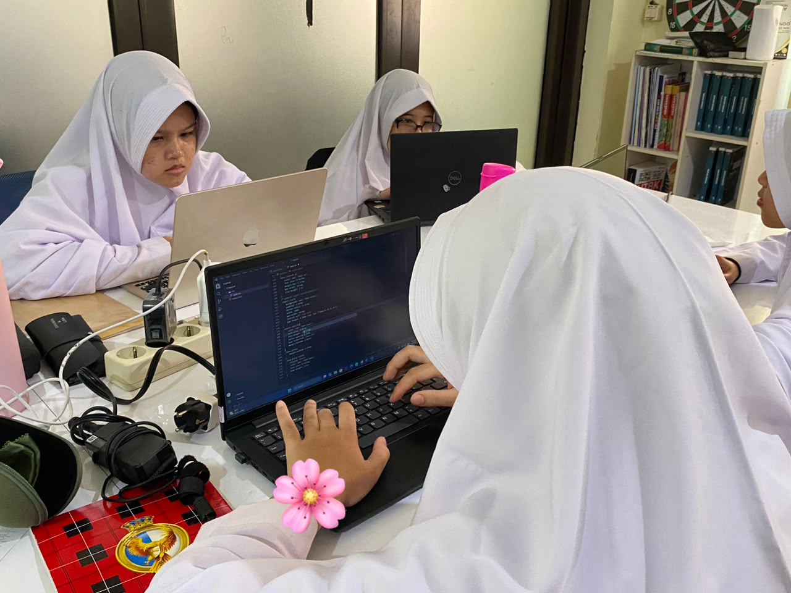

SCHOOL FACILITY REPORTING SYSTEM
Laporkan kerusakan,
jaga fasilitas sekolah.
Ada fasilitas sekolah yang rusak? Yuk, laporkan melalui FasTrack agar bisa segera diperiksa dan diperbaiki.
Ringkasan Laporan
Pantau kondisi laporan fasilitas sekolah.
Laporan Terbaru
2 laporan
Ada fasilitas yang
perlu diperbaiki?
Bantu kami menjaga lingkungan sekolah dengan melaporkan fasilitas yang membutuhkan perhatian.
Isi Laporan
Ceritakan fasilitas yang mengalami kerusakan.
Pemeriksaan
Laporan akan diperiksa oleh petugas.
Tindak Lanjut
Kerusakan ditangani sesuai kondisi fasilitas.
Buat Laporan
Sampaikan informasi kerusakan fasilitas sekolah melalui formulir berikut.

Peduli lingkungan,
mulai dari sekolah.
FASTRACK • SCHOOL FACILITY REPORTING
Sekolah yang nyaman,
dimulai dari kepedulian.
Temukan fasilitas yang perlu diperbaiki? Jangan ragu untuk melaporkannya. Setiap laporan membantu menjaga lingkungan sekolah.
Laporkan Kerusakan